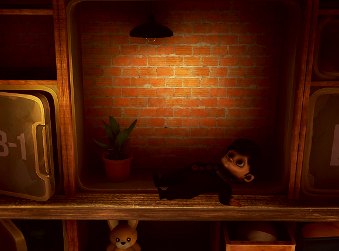
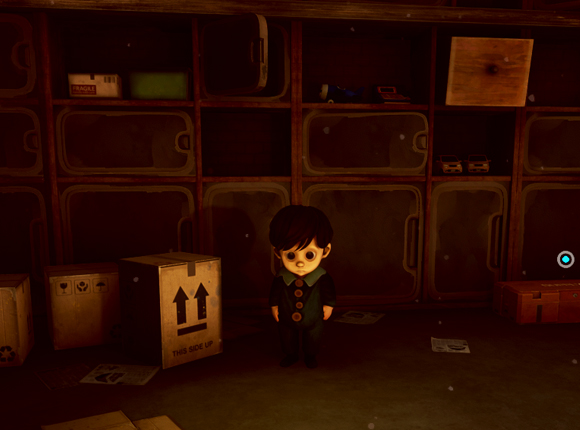

Product / UI · UX · Game
Hi, I’m Eddie 葉宗諺
我是一個喜歡設計和思考的設計師，認為良好的 UX 能讓資訊更清晰、溝通更順暢，讓生活變得更好。
- phone_enabled0917-033-751
- maildesignyan8@gmail.com
我的經歷
擁有超過十年的平面、網站、手機APP、PC APP 、遊戲介面、遊戲3D建模、各項領域的專業。
擅長跨部門溝通，並且能和工程師和PM建立良好的溝通和技術交流，在任職於 HTC 宏達國際電子期間，參與各大線上線下活動視覺規劃和設計。
既能夠設計線上需要的網站網頁，也能夠一併設計線下活動應該需要的視覺資源，
世界上到處充滿UX 的學問，我也還在學習當中，希望能夠在更多更不一樣的領域中發揮我所學的專長。
我相信 UX 不僅是界面設計，而是涵蓋人類「食衣住行育樂」的所有體驗。生活中的所有人與人的關聯，任何人與人的互動都需要良好、清晰且具同理心的 UX 才能讓生活更順暢。
我始終認為「主動解決問題」作為設計師存在的核心價值。


我喜歡
設計遊戲故事一直是我的興趣之一。
從最初的世界觀發想到角色背景、情節走向，我喜歡把零散的想法拼湊成一個能吸引玩家沉浸其中的世界。
在嘗試獨立遊戲開發的過程中，我經常需要獨自完成從企劃、劇本到遊戲內事件邏輯的整個敘事框架，
因此逐漸培養了將抽象概念具體化的能力——學會用「可被遊戲機制呈現」的方式，整理世界流程、角色動機與故事節奏。
這樣的經驗讓我不只是喜歡寫故事，而是能真正把故事與玩法結合，讓敘事成為遊戲體驗的一部分。
對我來說，打造一個完整的世界觀不僅是創作，更是我理解玩家心理、強化遊戲魅力的重要方式。